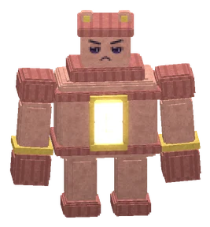
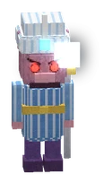

De Sterrendovende Toren raid
The first raid of the Vadsrijk: a tower at the Mother Oasis in Het Zijdeland whose stars were put out. Climb four floors with 2-10 players and light the stars again.De eerste raid van het Vadsrijk: een toren bij de Moederoase in Het Zijdeland waarvan de sterren zijn gedoofd. Klim met 2-10 spelers vier verdiepingen omhoog en steek de sterren weer aan.
The floorsDe verdiepingen

Floor 1: The Sand GuardVerdieping 1: De Zandwachter
De Zandwachter

Floor 2: The Mirror VizierVerdieping 2: De Spiegelvizier
De Spiegelvizier

Floor 3: The Dimmed ConstellationsVerdieping 3: De Gedoofde Sterrenbeelden
De Grote Knuffel, De Vliegende Bultguh, De Kleine Pluis

The roof: Duchess RingelingHet dak: Hertogin Ringeling
Hertogin Ringeling
How it worksZo werkt het
- 2 to 10 players; you can't go in alone. One group at a time: the rest queue in De Wachtzaal.2 tot 10 spelers; alleen kom je er niet in. Eén groep tegelijk: de rest staat in de rij in De Wachtzaal.
- Stand on the golden start circle for 3 seconds: party members in the waiting hall come along.Ga 3 tellen op de gouden startcirkel staan: partyleden in de Wachtzaal gaan mee.
- Four floors, each with a stair; the stair up is closed by purple star film until that floor's boss is cheered up.Vier verdiepingen, elk met een trap; de trap omhoog zit dicht met paars sterrenvlies tot de baas van die verdieping is opgevrolijkt.
- Fainting is mild: you wake up on the landing of your floor and may join in again. Eenvads knights do NOT retire in the raid.Flauwvallen is mild: je wordt wakker op het bordes van je verdieping en mag weer meedoen. Eénvads-ridders gaan in de raid NIET met pensioen.
- Wipe: nobody of the group alive in the hall during a fight = the floor starts over after 3 seconds (the wipe counter goes +1).Wipe: niemand van de groep meer levend in de zaal tijdens een gevecht = de verdieping begint na 3 tellen opnieuw (de wipeteller gaat +1).
- Raid frames (top right): up to 10 players, the floor + boss, the fight clock to the enrage, wipes and total time.Raidframes (rechtsboven): tot 10 spelers, de verdieping + baas, de gevechtsklok tot de woede (enrage), wipes en de totale tijd.
- On the live map of guhs.nl you are hidden while you are in the tower ("in de raid").Op de live kaart van guhs.nl ben je onzichtbaar zolang je in de toren bent ("in de raid").
ScalingSchalen
The bosses scale with the group size n at the start: HP x (0.55 + 0.45 n), mechanic counts ceil(n/2) (at least 2), at most 1 + n/3 adds. Hits only grow a little (x(0.9 + 0.02 n)): the challenge is the mechanics, not one-shots.
De bazen schalen met de groepsgrootte n bij de start: levens x (0,55 + 0,45 n), mechanics ceil(n/2) keer (minstens 2), hooguit 1 + n/3 hulpjes. Klappen groeien maar een beetje (x(0,9 + 0,02 n)): de uitdaging zijn de mechanics, niet de eenklappers.
| # | BossBaas | HP (base)Levens (basis) | 2 players2 spelers | 10 players10 spelers | Enrage |
|---|---|---|---|---|---|
| 1 | De Zandwachter | 30.000 | 43.500 | 151.500 | 8 min |
| 2 | De Spiegelvizier | 32.000 | 46.400 | 161.600 | 8 min |
| 3 | De Grote Knuffel | 15.000 | 21.750 | 75.750 | 8 min |
| 3 | De Vliegende Bultguh | 12.000 | 17.400 | 60.600 | 8 min |
| 3 | De Kleine Pluis | 9.000 | 13.050 | 45.450 | 8 min |
| 4 | Hertogin Ringeling | 40.000 | 58.000 | 202.000 | 10 min |
LootBuit
Loot is personal: EVERY clear gives every group member in the tower their own chest. No week limit, no rolling against each other. The chances are per player.
Buit is persoonlijk: ELKE clear geeft elk groepslid in de toren een eigen kist. Geen weeklimiet, geen dobbelen tegen elkaar. De kansen zijn per speler.
The clear chest (after Ringeling)De clear-kist (na Ringeling)
| KindSoort | WhatWat | ChanceKans | Details |
|---|---|---|---|
| Set pieceSetstuk | Sterrenzijde-set (1 stuk) Sterrenzijde-tulband, Sterrenzijde-tulband,  Sterrenzijde-mantel, Sterrenzijde-mantel,  Sterrenzijde-pofbroek, Sterrenzijde-pofbroek,  Sterrenzijde-teenslofjes Sterrenzijde-teenslofjes | 100% | sure, every clear (a piece you don't have yet first); Legendary, lv 70zeker, elke clear (eerst een stuk dat je nog niet hebt); Legendarisch, lv 70 |
| WeaponWapen | Raidwapen voor jouw klasse Ringbreker, Ringbreker,  Komeetboog, Komeetboog,  Sterrenstaf Sterrenstaf | 30% | 30%; sure on your first clear30%; zeker bij je eerste clear |
| TrophyTrofee | Ringreplica (gildetrofee) | 12% | 12%; sure on your first clear (guild trophy)12%; zeker bij je eerste clear |
| MountRijdier | Sterrennacht-halster (Sterrennacht-bultguh) | 10% | 10% per player per clear; guaranteed after 15 misses (pity counter per character)10% per speler per clear; zeker na 15 keer mis (geduldteller per karakter) |
| PetHuisdier | Sterrenpluisje | 4% | 4% |
| WardrobeKledingkast | Sterrenring-vleugels | 3% | 3% (wings with the air dash, in your Wardrobe)3% (vleugels met de luchtdash, in je Kledingkast) |
| JewellerySieraad | Ringelings Teenring Ringelings Teenring Ringelings Teenring | 1.5% | 1.5%; Guhddelijk (the whole server sees it)1.5%; Guhddelijk (de hele server ziet het) |
| CoinsMunten | 2500-3500 bronzebrons | 100% | every clearelke clear |
Floors 1-3Verdieping 1-3
A small chest per player: 700-1100 bronze and a 30% chance of a Sterrenzijde piece.
Een kleine kist per speler: 700-1100 brons en 30% kans op een Sterrenzijde-stuk.
TitlesTitels
- Ringbreker: clear the raidmaak de raid uit
- Sterrenaansteker: a clear without fainting onceeen clear zonder één keer flauw te vallen